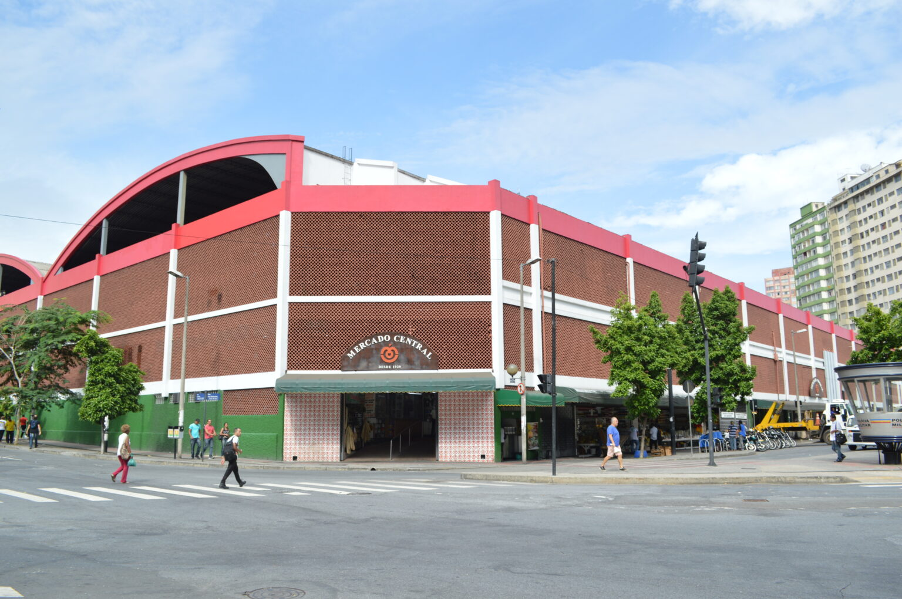

Belo Horizonte tinha apenas 31 anos quando um prefeito empreendedor resolveu
reunir, em um só local, os produtos destinados ao abastecimento dos 47.000
habitantes da jovem cidade. Foi assim que o Mercado Central nasceu, em 07 de
setembro de 1929: unindo as feiras da Praça da Estação e da praça da atual
rodoviária. Em um terreno de 22 lotes, próximo à Praça Raul Soares, o prefeito
Cristiano Machado reuniu todos os feirantes, centralizando o abastecimento da
população. Nos 14.000 m² do terreno descoberto, circundado pelas carroças que
transportavam os produtos, as barracas de madeira se enfileiravam para a venda
de alimentos.
O Mercado, então denominado Mercado Municipal, com sua atividade intensa e
movimento alegre, funcionou até 1964, quando o prefeito da época, Jorge
Carone, resolveu vender o terreno, alegando impossibilidade de administrar a
feira. Para impedir o fechamento do Mercado, os comerciantes se organizaram,
criaram uma cooperativa e compraram imóvel da Prefeitura. No entanto, teriam
que construir um galpão coberto na área total do loteamento no prazo de cinco
anos. Se não conseguissem, teriam que devolver a área à Prefeitura.

A tarefa não foi fácil. À duas semanas do fim do prazo dado pela prefeitura,
ainda faltava o fechamento da área. Foi então que os irmãos Osvaldo, Vicente e
Milton de Araújo, fundadores do Banco Mercantil do Brasil, decidiram acreditar
no empreendimento e investiram no projeto. Foram contratadas quatro
construtoras, ficando cada uma responsável por uma lateral, para que o galpão
pudesse ser fechado no prazo estabelecido. Ao fim do prazo, os 14.000 m² de
terreno estavam totalmente fechados. Os associados, com seu empreendedorismo e
entusiasmo, viam seu esforço recompensado.
Assim, bem organizado e com participação ativa dos comerciantes, a cada dia ao
longo dos anos o Mercado ampliava suas atividades, expandia seus negócios e se
transformava em um núcleo não só de produtos alimentícios, mas também de
artesanato e de comidas típicas, tornando-se um dos principais pontos
turísticos de Belo Horizonte e um dos locais mais queridos pelos mineiros.
Atualmente, com 95 anos de vida, o mercado possui mais de 400 lojas,
atrai milhares de visitantes de todos os lugares do Brasil e do mundo diariamente e,
em seus corredores, guarda grandes memórias e muitas histórias para contar.